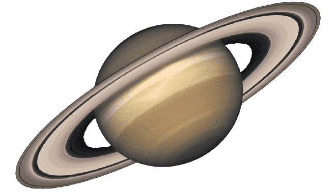

- 1. Saturno é o sexto planeta a partir do Sol em nosso sistema solar.
- 2. É conhecido por seus impressionantes anéis, que são compostos principalmente de partículas de gelo e poeira.
- 3. Os anéis de Saturno são extremamente largos, mas incrivelmente finos em comparação com seu diâmetro.
- 4. Saturno é um gigante gasoso, composto principalmente de hidrogênio e hélio, sem uma superfície sólida definida.
- 5. Ele possui um dos sistemas de anéis mais complexos e espetaculares do sistema solar, com milhares de anéis individuais.
- 6. Saturno tem uma das rotações mais rápidas entre os planetas gasosos, completando um dia em menos de 11 horas terrestres.
- 7. Suas luas incluem Titã, a maior lua, que é única por ter uma atmosfera densa e líquidos em sua superfície, incluindo lagos e mares de hidrocarbonetos.
- 8. A missão Cassini-Huygens, uma colaboração entre a NASA, a ESA e a Agência Espacial Italiana, estudou Saturno e suas luas por mais de uma década, proporcionando informações valiosas.
- 9. Saturno é visível a olho nu da Terra e é frequentemente referido como o "Senhor dos Anéis" devido à sua aparência notável no céu noturno.
- 10. Sua atmosfera apresenta faixas de nuvens, tempestades e um polo norte que abriga um hexágono persistente e misterioso.
|

|